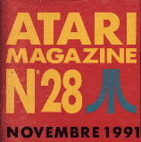
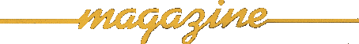
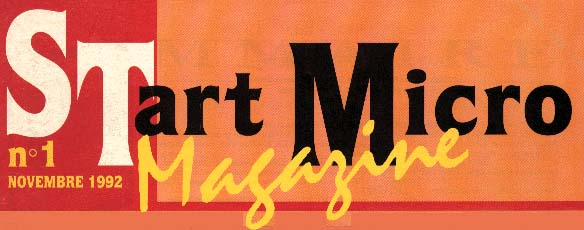

|  | Atari
Magazine fut l'un des premiers magazine parlant de l'Atari en général.
On pouvait y suivre l'actualitée Atari, des interviews, de la PAO,
MAO, logiciels ... La richesse de ce mensuel se trouvait dans les pages
de programmation avec les exemples qui se trouvaient au milieu du MAG. En octobre 1992, il deviendra START MICRO ... |
|  | |
|
Il y a eu très peu de disquettes sorties avec le MAG, Le dernier numéro 37 paraitra avec deux uniquement. Voici quelques disquettes du magazine à télécharger : Atari Magazine Special ACCESSOIRES, Atari Magazine Special JEUX et Atari Magazine Special MUSIQUES. |
|
|  |
| Ce
magazine repris la suite logique d'Atari Magazine. Sa principal activitée était la DP : le Domaine Public et nous informait sur les dernières nouveautées. Accompagnée de sa disquette, ce magazine élargira ses domaines au FALCON ainsi que de la console JAGUAR. La crise fait rage en 1995, on avertira les lecteurs que le MAG deviendrait chère et qu'il ne serait plus disponible dans les kiosques à journaux pour de multiples raisons... |
| Le
dernier des MAGs accompagné d'un CDROM. Très complet, ce magazine
rajeuni l'Atari ainsi que ces fidèles... Malheureusement le magazine n'a tenue que trois editions. |

[ Divers | Demos | Dentros | Mags | Trackers | Players | Utils ]